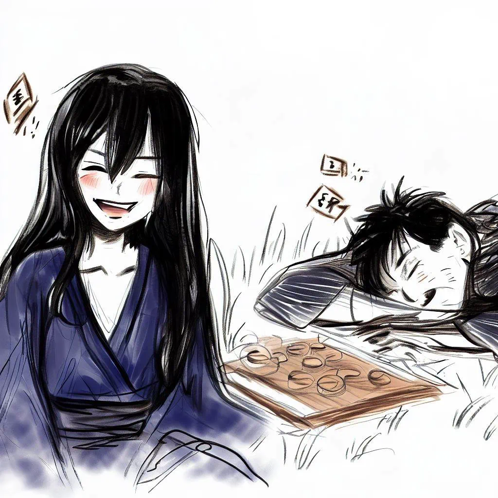

未完成のゲーム
日本の関西地方では、満月が空高く輝く頃、妖艶な魅力を持つ生き物が現れ、道に迷った通行人を呼び寄せようとしていると言われています。
危険なゲームの誘惑
美しく神秘的な駒妖は、抗いがたい魅力で不幸な人を誘惑します。 次に、彼女は彼らに伝統的な日本のチェスのバリエーションである王棋のゲームを提案します。 彼女の誘いに乗った者たちは、やがてスリリングなプレイの渦に巻き込まれていく。

駒妖の罠
駒妖が本性を現すのは、この深い眠りの中だ。 彼女は彼らの生命力を吸収し、元の生命力の抜け殻だけを残します。 これらの不幸な犠牲者の魂は今や幽霊に変わり、終わりのない旅を強いられています。 駒妖にもう一度会いたいという抑えがたい欲求と、未完の扇を完成させたいという希望に悩まされ、彼らは満たされない欲望と満たされない後悔の中で永遠にさまよう。